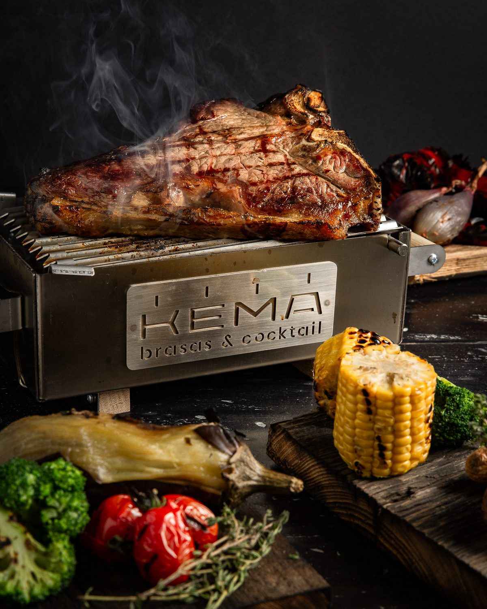
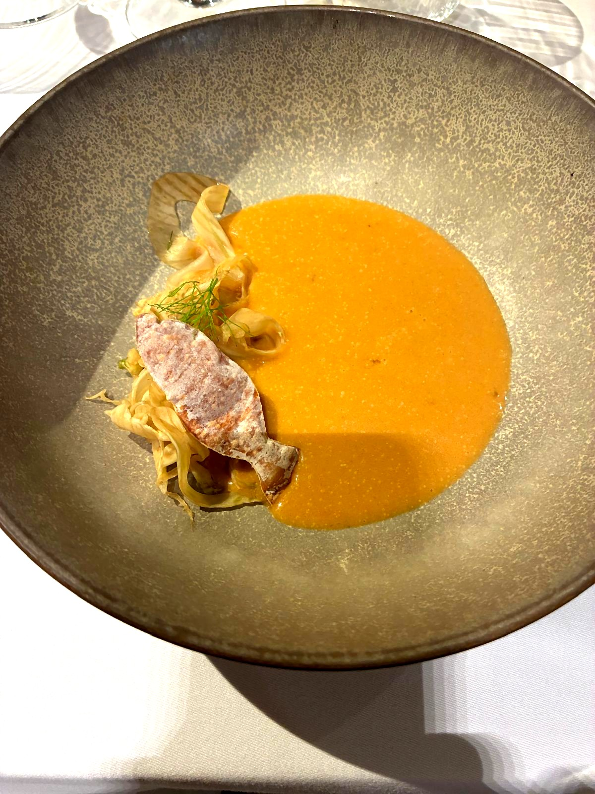

El recorrido anual de los Gourmets de Tarragona ha llegado a su ecuador. Cuatro visitas completadas sobre ocho previstas. Y, a la distancia que da el tiempo, la posibilidad de detenerse un momento antes de continuar.
No se trata de adelantar valoraciones. La Gala de final de año tiene ese cometido, y los socios harán entonces su trabajo con rigor. Se trata, simplemente, de trazar un mapa provisional: cuatro propuestas, cuatro identidades, cuatro lecturas distintas del territorio que nos define.
Kema
Brasas & CocteleríaLa primera visita del año nos llevó a Cambrils. Kema no disimula lo que es: un restaurante de brasas y coctelería que ha construido un discurso coherente alrededor del fuego —de la robata al horno de leña— y lo complementa con una selección enológica de criterio. Martín Juza y su equipo firmaron una noche con tesis clara: la brasa no es un método, es una actitud.

Kema · Cambrils — La robata y el producto: el fuego como lenguaje
La Goleta
Pescados & Mariscos · 40 añosCuarenta años. La Goleta arrancó en 1986, frente a la Platja dels Capellans de Salou, y desde entonces ha hecho de la coherencia su principal argumento. La visita del 10 de abril encontró un restaurante que no necesita reinventarse porque nunca lo ha olvidado. Ignacio Ureña lo resume en tres palabras: "Todo es evolución."

La Platja dels Capellans de Salou — escenario de cuarenta años de gastronomía
La decisión enológica fue singular: un único vino para toda la noche —el 1270 de Celler Hidalgo Albert, Garnatxa Blanca del Priorat— y la sala lo aceptó sin objeciones. Porque cuando algo funciona, la coherencia es más poderosa que la variedad. La presencia de José Vilaseca Rius, cofundador de los Casacas Rojas de Barcelona, añadió una dimensión que ningún guion habría previsto. El grito de "¡FESTIVAL!" que surgió espontáneamente de la sala al final de la noche resumía, mejor que cualquier crítica, lo que La Goleta consigue todavía después de cuatro décadas.
El Terrat
Cocina mediterránea creativaLa tercera visita de los Gourmets a El Terrat confirmó lo que las dos anteriores habían apuntado: Tarragona tiene un restaurante que sabe exactamente lo que es. Moha Quach lo dijo él mismo, con la brevedad de quien no necesita más palabras: "Cocino lo que soy, con lo que tenemos aquí."

Emili Mateu diserta sobre el romesco. Moha Quach escucha. El momento más valioso de la noche no salió de ningún plato.
El lavamanos de agua de rosas como bienvenida —tradición amazigh incorporada como gesto de identidad—, la disertación de Emili Mateu sobre el romesco y el pimiento genuino de Tarragona que algunos productores del Camp están recuperando, los cuatro vinos de Josep Foraster (todos de la Conca de Barberà, de principio a fin), el trofeo de honor a Àngel Pérez del Grupo El Pósito. Una velada sin grietas en la que la cocina fue el hilo conductor de una conversación sobre el territorio que ninguno de los asistentes olvidará pronto.
Cervus
Cocina de producto y territorioLa cuarta visita fue doble: dos noches, dos grupos, un mismo menú. Cervus, con solo dieciocho meses de vida y ya con un Sol Repsol, tuvo el gesto de doblar jornada para acoger a todos los socios sin dividir la experiencia. Un detalle que dice mucho del carácter de Nil Bono y Lucía Fernández.

Galera, amontillado y lácteos — la galera elevada a protagonista. El plato más comentado del primer pase.
El rebujito reinterpretado —vermut de Reus y oloroso juntos— abrió la noche con un guiño de complicidad entre Cataluña y Andalucía que no necesitó explicación. Y así fue el menú entero: una conversación natural entre dos culturas gastronómicas que, cuando se entienden bien, se potencian mutuamente. La galera elevada a protagonista, el cerdo ibérico junto a los chipirones en tinta, el arroz meloso de carrilleras y fricandó coronado por aquella galleta calada que parecía salida de un taller de orfebrería. Cervus no grita. Trabaja con la discreción de quien confía en que el plato acaba siempre hablando solo.
Cuatro propuestas. Un solo territorio.
Cuatro municipios, cuatro identidades distintas. Y sin embargo, un hilo conductor que aparece en todos: el territorio. No como recurso retórico ni como etiqueta de marketing, sino como punto de partida real.
La gamba roja de Tarragona en Kema. El mar de Salou en La Goleta. El pimiento de romesco que vuelve a los campos del Camp a través de El Terrat. El vermut de Reus como primer gesto de bienvenida en Cervus.
El Camp de Tarragona tiene más mesa de la que a menudo se le reconoce. La temporada 2026 lleva cuatro visitas demostrándolo. Quedan cuatro restaurantes por visitar. La Gala de final de año dará las valoraciones definitivas.
Fuentes consultadas: crónicas de la temporada 2026 publicadas en gourmetsdetarragona.com
Lee cada visita en detalle
Fuego, producto y cocina de raíz. Primera visita de la temporada 2026 en Cambrils.
Leer →
Crònica
Cuarenta años sin decepcionar. Una noche junto al mar y a los Casacas Rojas.
Leer → Crònica
Crònica
Agua de rosas, briwat en dos pasos, romesco de gamba y tajine de cordero. Tarragona con todo el argumento.
Leer →Dos cocineros, dos noches, un Sol Repsol. La cuina que Reus es mereixia.
Leer →